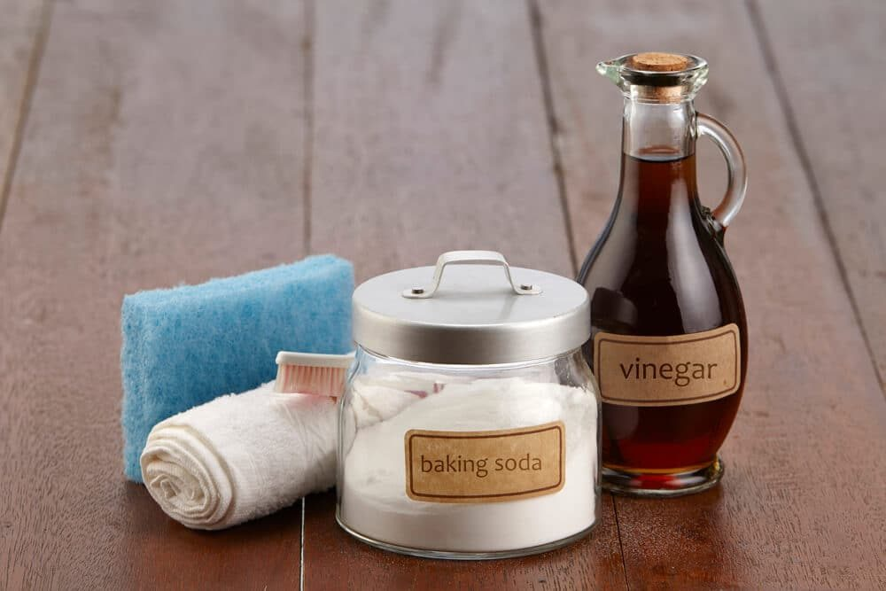

In This Guide
- A bucket of soapy water, a long-handled brush, and a garden hose clean most fences without any power equipment.
- White vinegar and baking soda help with light mildew and algae, and they are gentler than harsh chemical cleaners.
- Never mix bleach with vinegar or other cleaners, and wet and cover nearby plants before you start.
- Let the fence dry fully afterward, then check it for damage and decide whether it needs a fresh coat of stain or sealer.
Fences collect dirt the same way any outdoor surface does. Dust, pollen, road grime, and leaves settle on the boards, and in humid weather mildew and algae move in. A pressure washer is one way to deal with it, but it is far from the only way, and it can be hard on soft wood.
This guide from Big Easy Fence shows how to clean a wood fence by hand with everyday supplies, how to handle mildew, and how to protect the plants growing along the fence line.
Why Skip the Pressure Washer?
High pressure can gouge soft wood, raise the grain, and leave fuzzy or striped patches that stay visible long after the fence dries. It can also drive water deep into boards and joints, which is the last thing a wood fence needs. Machines cost money to buy or rent, and setting up and running one takes time.
Cleaning by hand takes more elbow grease, but it is gentle, cheap, and easy to control. For most fences, it does the job. Heavy staining and thick growth may take a few rounds, but the wood stays in better shape.
What You Will Need
- A garden hose with a spray nozzle. For wetting and rinsing the fence.
- A bucket and mild dish soap. For the main wash.
- A deck brush on a long pole. Medium bristles scrub well, and the handle saves your back and reaches the tops of boards.
- White vinegar and baking soda. For mildew and algae.
- Gloves and safety glasses. Splashes and flying bristles go where you least expect them.
- Old clothes and a dust mask. If there is heavy mildew growth, the mask keeps you from breathing in spores while you scrub.
Step-by-Step Cleaning
Prepare the Area
Trim back plants and vines from the fence, sweep off cobwebs and loose debris, and move furniture or planters out of the way. Wet down nearby plants and grass with the hose, or cover them with a plastic sheet. Rinse them again when you finish so any splashes wash off.
Wash With Soap and Water
Wet a section of fence, then mix a few squirts of dish soap into a bucket of warm water. Scrub with the grain of the wood, working from the top down so dirty water runs over uncleaned areas rather than clean ones. Tackle the fence in small sections, and rinse each one before the soap dries.
Treat Mildew and Algae
For green or black patches, mix equal parts white vinegar and water in a spray bottle. Spray the area, let it sit for several minutes, then scrub it off. For stubborn spots, spray on vinegar, sprinkle on baking soda, and scrub with the brush. You may need to repeat the process a few times. Test any cleaner on a hidden patch first.
Rinse and Let It Dry
Rinse the whole fence from top to bottom with clean water, and hose down the plants and ground at the base too. Give the fence time to dry completely, ideally through a sunny stretch. Louisiana humidity can slow drying, so pick a dry day for the job.
| Problem | What to Use | How to Apply |
|---|---|---|
| Dust and Light Grime | Dish soap and warm water | Scrub with the grain, then rinse |
| Mildew and Algae | White vinegar and water | Spray, wait several minutes, scrub, rinse |
| Stubborn Spots | Vinegar and baking soda | Spray, sprinkle on soda, scrub, repeat if needed |
| Heavy Growth | Store-bought wood cleaner | Follow the label, test a small area first |
Cleaning Products and Safety

Vinegar and Baking Soda
These are good alternatives to harsh chemicals. They work best when you scrub, since they loosen grime but do not dissolve it the way stronger cleaners do. Keep vinegar off plants, which it can burn.
Store-Bought Wood Cleaners
Many wood and deck cleaners are made for mildew, algae, and mold. Oxygen-based formulas are often a gentler choice for wood. Read the label, wear gloves, and test on a hidden section before you treat the whole fence.
Bleach Cautions
Chlorine bleach can lighten wood and weaken its fibers, and it harms plants and grass. If you decide to use it, dilute it as the label directs, keep it off vegetation, and rinse thoroughly. Never mix bleach with vinegar, ammonia, or other cleaners, since the combination can release dangerous fumes.
Cleaning Vinyl and Metal Fences
Vinyl and aluminum are easier. A soft cloth or brush, mild soap, and water are usually enough. Skip abrasive pads and harsh cleaners, which can scratch the finish. Our guide to cleaning aluminum fences covers metal fences in more detail.
After the Wash: Inspect and Protect
Once the fence is dry, walk the line and look for damage that dirt was hiding. Cracked boards, soft or rotted spots, loose fasteners, and leaning posts are all worth fixing. If you find more than a few small repairs, our fence repair team can help.
A clean fence also shows whether its finish is still doing its job. If water soaks into the boards instead of beading, it may be time for a new coat. Our guide to choosing the best wood stain for fences can help you pick one.
Keeping It Clean Longer
A little routine goes a long way. Keep plants trimmed back so air can move along the fence, brush off leaves and debris that hold moisture, and give the fence a quick wash once or twice a year. If you are thinking about a new fence that will need less upkeep, browse our residential fencing services or ask about a free estimate.
Is Your Fence Past a Simple Cleaning?
If the boards are loose, soft, or leaning, tell us what you see and we will help you decide what to do next.